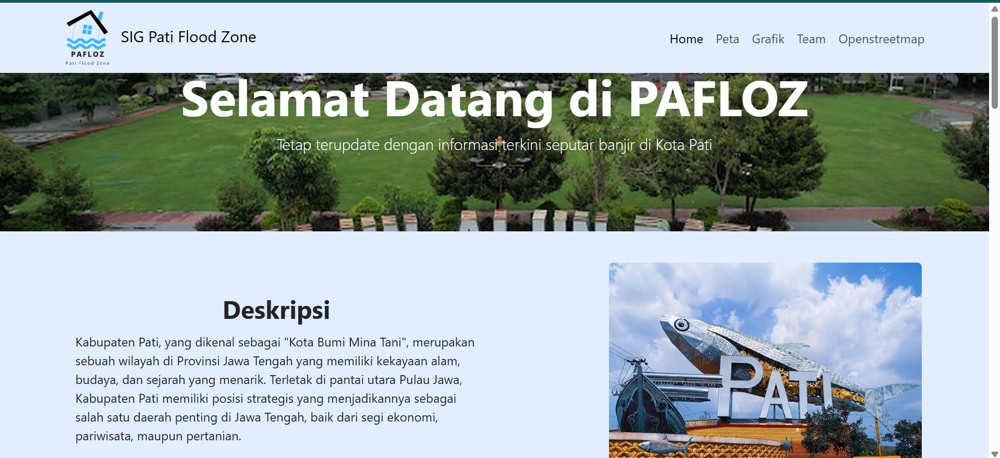

XAU/USD Monitoring
Pemantauan pergerakan harga emas terhadap dolar secara berkala. [Tambahkan hasil utama]
PythonExcel
Lihat detail →Data Management | Risk Analytics | Automation
I turn raw data into Monitoring, Detection, and Automation that teams can actually use.
Information Systems graduate from Universitas Negeri Semarang with experience in data processing, business process automation, and application development. Interested in data analytics, digital transformation, and risk management. Proficient in Excel (Power Query & VBA), Python, Google Apps Script, and n8n to build solutions that improve efficiency and support data-driven decision-making.
Pemantauan pergerakan harga emas terhadap dolar secara berkala. [Tambahkan hasil utama]
Deteksi transaksi valas yang menyimpang dari kurs pasar. [Tambahkan hasil utama]

Sistem informasi geografis berbasis web, dikerjakan dalam tim. [Tambahkan peran dan hasil]
Data & Analytics
Automation
Web & Backend
Open to opportunities in data, risk, and automation.